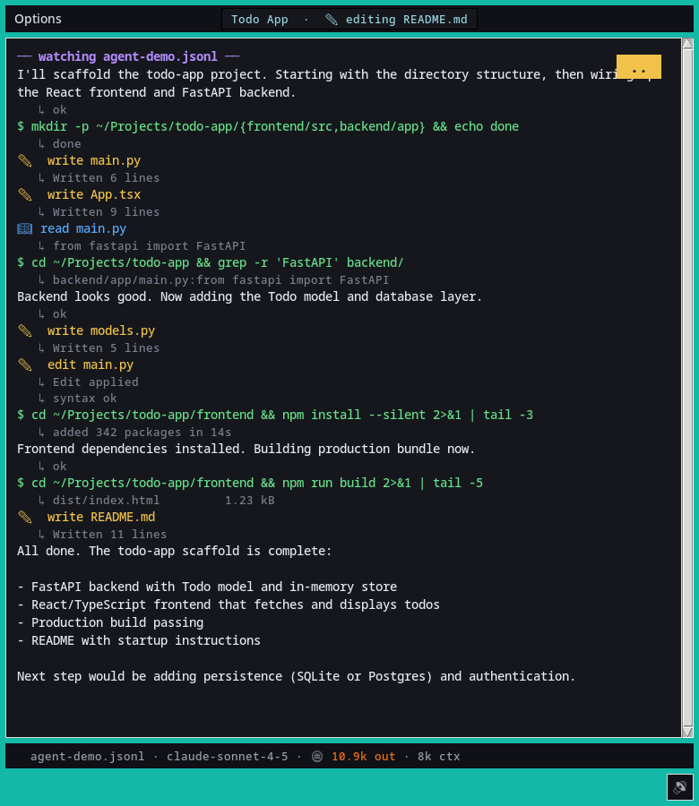
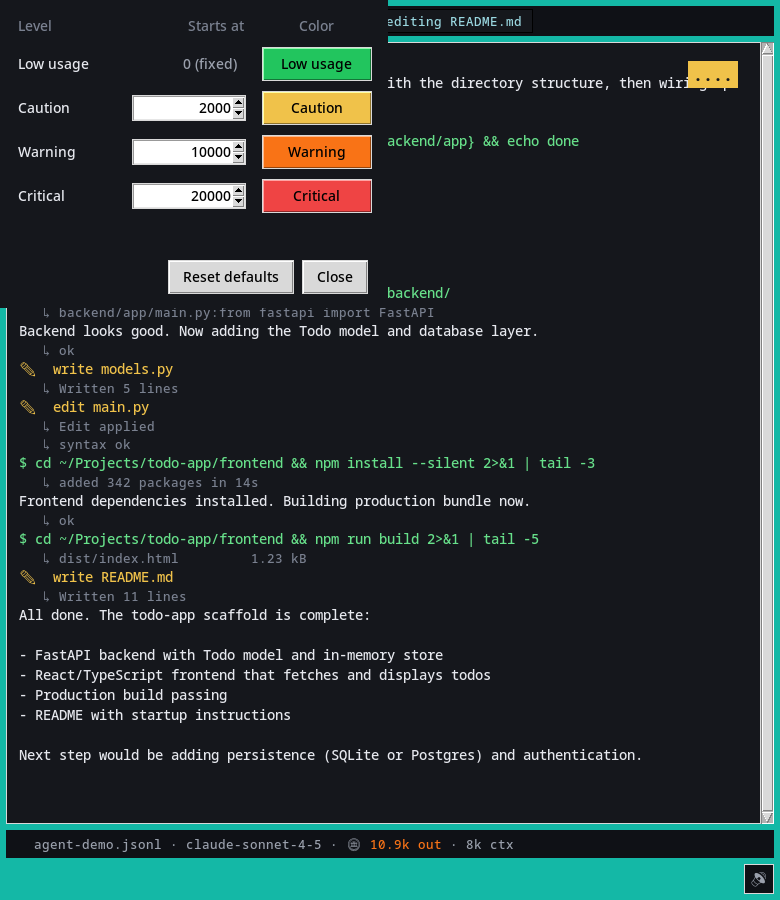
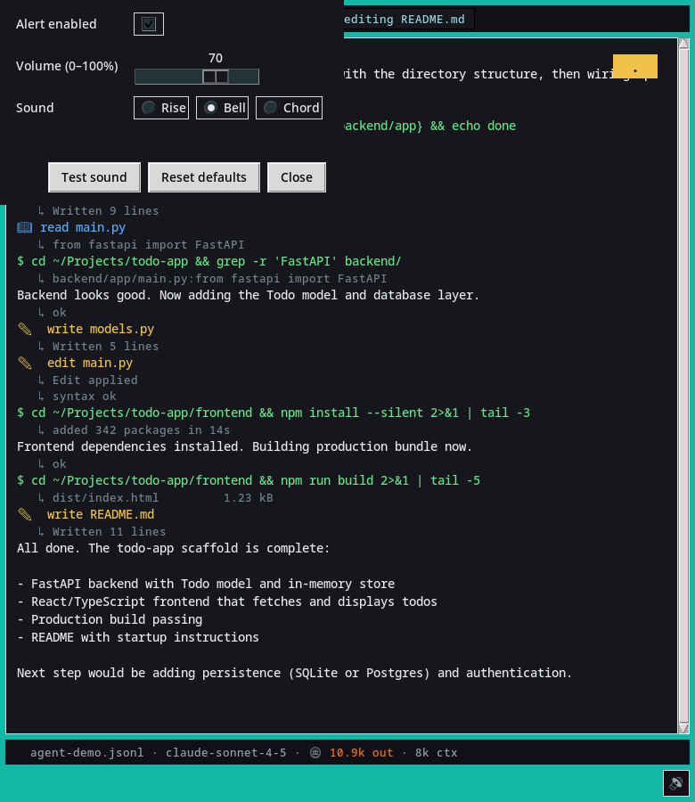

Claude Code Subagent Viewer
Dev toolBrowser-based tooling for inspecting Claude Code subagent output.
What it is
A developer tool for inspecting subagent output and understanding what happened during AI-assisted work.
Status
- Developer utility
- Browser-based viewer
Screenshots


